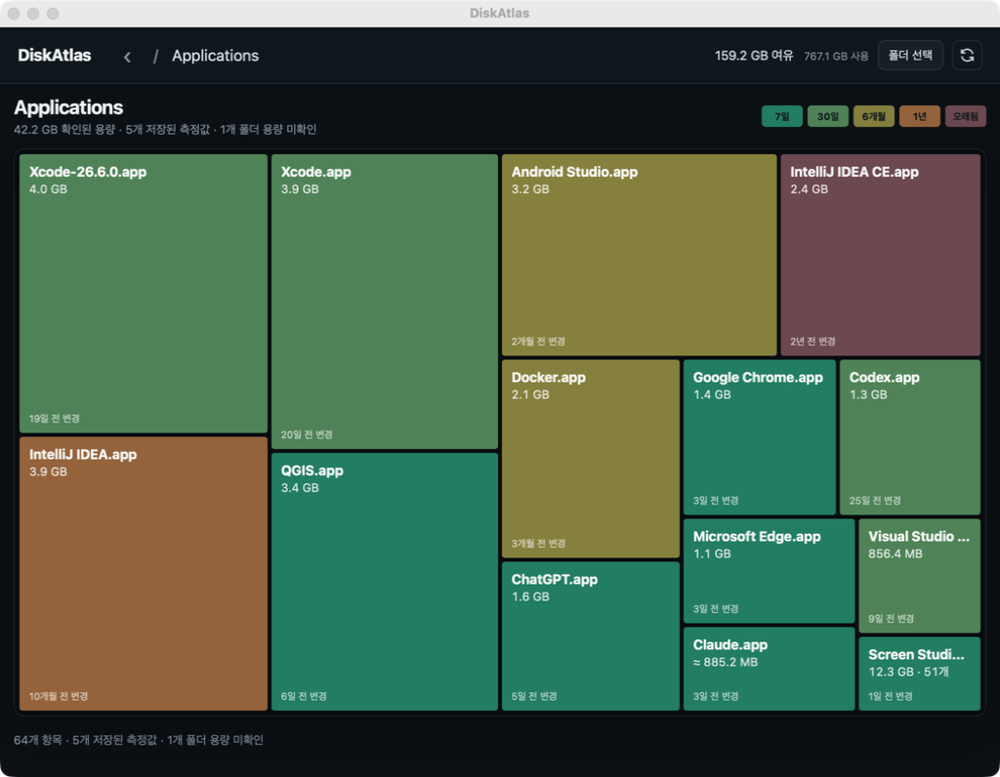

See the space
Spot the folders and files taking up the most room without digging through nested lists.
See where your disk went. Explore folders by size, follow what changed, and choose what to move to Trash.
A desktop app for macOS and Windows

Big folders become big blocks. Open one to see what is inside and keep following the space until the picture makes sense.
Spot the folders and files taking up the most room without digging through nested lists.
Compare folder sizes with the last full scan and trace a change into its subfolders.
Select items and hold for two seconds to move them to Trash. You decide what leaves your disk.
Download the latest release, or install DiskAtlas on macOS with Homebrew.
Install with Homebrew or download the universal app from GitHub Releases.
brew install --cask sangwonl/tap/diskatlasDownload the x64 installer from GitHub Releases. It installs for your Windows user account.
Windows may show a SmartScreen warning because the installer is unsigned. Only continue if you downloaded it from the DiskAtlas release page.
Download for Windows